|
|
Результаты
Спрятать верно решенные Рекомендуем справочные материалы на Сайте элементарной математики Дмитрия Гущина Из части B правильно решено 0 из 89 заданий. Решения ↑ Задание 1 № 500168 тип B12 (решено неверно или не решено) Зависимость объема спроса Решение. Задача сводится к решению уравнения 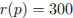: 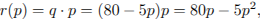 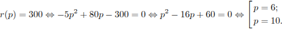 Ответ: 10. Ваш ответ: нет ответа. Правильный ответ: 10 Обсудить ВКонтакте Сообщить об ошибке ↑ Задание 2 № 27985 тип B12 (решено неверно или не решено) Расстояние (в км) от наблюдателя, находящегося на высоте h м над землeй, выраженное в километрах, до наблюдаемой им линии горизонта вычисляется по формуле  , где , где  км — радиус Земли. Человек, стоящий на пляже, видит горизонт на расстоянии 4,8 км. На сколько метров нужно подняться человеку, чтобы расстояние до горизонта увеличилось до 6,4 километров? км — радиус Земли. Человек, стоящий на пляже, видит горизонт на расстоянии 4,8 км. На сколько метров нужно подняться человеку, чтобы расстояние до горизонта увеличилось до 6,4 километров?
Решение. Задача сводится к решению уравнений 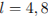 и 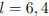 при заданном значении R: 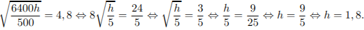 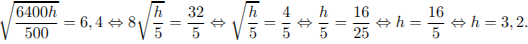 Следовательно, чтобы видеть горизонт на более далеком расстоянии, наблюдателю нужно подняться на 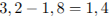 метра. Ответ: 1,4. Ваш ответ: нет ответа. Правильный ответ: 1,4 Руслан Галеев (Магнитогорск) 25.02.2013 18:30: Ответ к задаче неверный, т. к. расстояния 1,8 и 3,2 получаются в километрах, а ответить нужно в метрах. Служба поддержки:
Все верно. Наталья Забирова (Коломна) 04.04.2013 14:33: Скажите, а разве h и R в одной и той же в формуле могут выражаться одна в метрах, а другая в километрах? Анастасия Смирнова (Санкт-Петербург):
Ну да, почему нет, если это удобно. ↑ Задание 3 № 317098 тип B12 (решено неверно или не решено) Рейтинг интернет-магазина вычисляется по формуле  где Решение. Подставим значения в формулу: 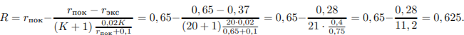 Ответ:0,625. Ваш ответ: нет ответа. Правильный ответ: 0,625 ↑ Задание 4 № 27997 тип B12 (решено неверно или не решено) Находящийся в воде водолазный колокол, содержащий  – постоянная, – постоянная,  – температура воздуха, – температура воздуха, Решение. Задача сводится к решению неравенства 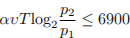 при заданных значениях постоянной 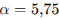, температуры воздуха  К, начального давления К, начального давления  атм и количества воздуха 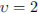 моль: атм и количества воздуха 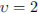 моль:
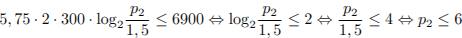 атм. Ответ: 6. Ваш ответ: нет ответа. Правильный ответ: 6 ↑ Задание 5 № 27998 тип B12 (решено неверно или не решено) Мяч бросили под углом  м/с? Считайте, что ускорение свободного падения 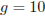 м/с м/с? Считайте, что ускорение свободного падения 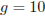 м/сРешение. Задача сводится к решению неравенства 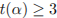 на интервале при заданных значениях начальной скорости и ускорения свободного падения: 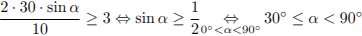. Ответ: 30. Ваш ответ: нет ответа. Правильный ответ: 30 ↑ Задание 6 № 27968 тип B12 (решено неверно или не решено) На верфи инженеры проектируют новый аппарат для погружения на небольшие глубины. Конструкция имеет форму сферы, а значит, действующая на аппарат выталкивающая (архимедова) сила, выражаемая в ньютонах, будет определяться по формуле: 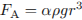, где  – постоянная, – постоянная, Решение. Задача сводится к решению неравенства при заданных значениях плотности воды и ускорении свободного падения: 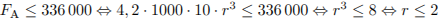 м. Ответ: 2. Ваш ответ: нет ответа. Правильный ответ: 2 ↑ Задание 7 № 28007 тип B12 (решено неверно или не решено) Трактор тащит сани с силой 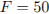 кН, направленной под острым углом  . При каком максимальном угле . При каком максимальном угле Решение. Задача сводится к решению неравенства 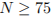 на интервале при заданных значениях силы кН и скорости 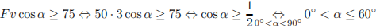. Ответ: 60. Ваш ответ: нет ответа. Правильный ответ: 60 ↑ Задание 8 № 42569 тип B12 (решено неверно или не решено) Расстояние от наблюдателя, находящегося на небольшой высоте , где км — радиус Земли. На какой наименьшей высоте следует располагаться наблюдателю, чтобы он видел горизонт на расстоянии не менее 8 километров? Ответ выразите в метрах.Решение. Задача сводится к решению уравнения 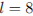 при заданном значении : 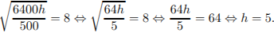 Значит, наименьшая высота, на которой следует располагаться наблюдателю, чтобы он видел горизонт на расстоянии не менее 8 километров, равна 5 километрам. Ответ: 5000. Ваш ответ: нет ответа. Правильный ответ: 5000 ↑ Задание 9 № 27960 тип B12 (решено неверно или не решено) В боковой стенке высокого цилиндрического бака у самого дна закреплeн кран. После его открытия вода начинает вытекать из бака, при этом высота столба воды в нeм, выраженная в метрах, меняется по закону 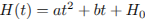, где  м/мин2, и 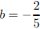 м/мин постоянные, – время в минутах, прошедшее с момента открытия крана. В течение какого времени вода будет вытекать из бака? Ответ приведите в минутах. м/мин2, и 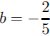 м/мин постоянные, – время в минутах, прошедшее с момента открытия крана. В течение какого времени вода будет вытекать из бака? Ответ приведите в минутах.Решение. Формулой, описывающей уменьшение высоты столба воды с течением времени является 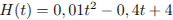. Вода будет вытекать из бака, пока её начальный уровень не понизится до нуля. Определим требуемое на это время, решая уравнение 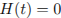: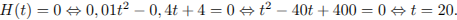 Это означает, что по прошествии 20 минут вся вода вытечет из бака.Ответ: 20. Ваш ответ: нет ответа. Правильный ответ: 20 ↑ Задание 10 № 27999 тип B12 (решено неверно или не решено) Деталью некоторого прибора является квадратная рамка с намотанным на неe проводом, через который пропущен постоянный ток. Рамка помещена в однородное магнитное поле так, что она может вращаться. Момент силы Ампера, стремящейся повернуть рамку, (в Н  – число витков провода в рамке, – число витков провода в рамке, Решение. Задача сводится к решению неравенства 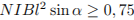 на интервале при заданных значениях силы тока в рамке 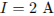, размера рамки 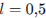 м, числа витков провода  и индукции магнитного поля и индукции магнитного поля  Тл: Тл:
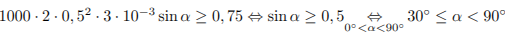. Ответ: 30. Ваш ответ: нет ответа. Правильный ответ: 30 ↑ Задание 11 № 263802 тип B12 (решено неверно или не решено) Расстояние (в км) от наблюдателя, находящегося на небольшой высоте (км) — радиус Земли. С какой высоты горизонт виден на расстоянии 4 километра? Ответ выразите в километрах.
Решение. Задача сводится к решению уравнений 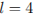 при заданном значении R: 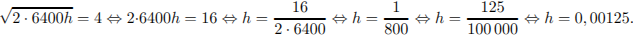 Примечание. Заметим, что полученная величина равна 1,25 метра, т. е. соответствует уровню глаз ребенка. Ответ: 0,00125. Ваш ответ: нет ответа. Правильный ответ: 0,00125 ↑ Задание 12 № 27979 тип B12 (решено неверно или не решено) К источнику с ЭДС  . При каком наименьшем значении сопротивления нагрузки напряжение на ней будет не менее 50 В? Ответ выразите в Омах. . При каком наименьшем значении сопротивления нагрузки напряжение на ней будет не менее 50 В? Ответ выразите в Омах.Решение. Задача сводится к решению неравенства В при известных значениях внутреннего сопротивления 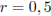 Ом, ЭДС 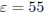 В: 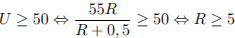 Ом. Ответ: 5. Ваш ответ: нет ответа. Правильный ответ: 5 ↑ Задание 13 № 27994 тип B12 (решено неверно или не решено) Eмкость высоковольтного конденсатора в телевизоре 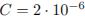 Ф. Параллельно с конденсатором подключeн резистор с сопротивлением  Ом. Во время работы телевизора напряжение на конденсаторе Ом. Во время работы телевизора напряжение на конденсаторе  кВ. После выключения телевизора напряжение на конденсаторе убывает до значения U (кВ) за время, определяемое выражением кВ. После выключения телевизора напряжение на конденсаторе убывает до значения U (кВ) за время, определяемое выражением  (с), где (с), где  – постоянная. Определите (в киловольтах), наибольшее возможное напряжение на конденсаторе, если после выключения телевизора прошло не менее 21 с? – постоянная. Определите (в киловольтах), наибольшее возможное напряжение на конденсаторе, если после выключения телевизора прошло не менее 21 с?Решение. Задача сводится к решению неравенства при заданных значениях начального напряжения на конденсаторе  кВ, сопротивления резистора 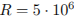 Ом и ёмкости конденсатора кВ, сопротивления резистора 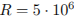 Ом и ёмкости конденсатора  Ф: Ф:
кВ. Ответ: 2. Ваш ответ: нет ответа. Правильный ответ: 2 ↑ Задание 14 № 27972 тип B12 (решено неверно или не решено) По закону Ома для полной цепи сила тока, измеряемая в амперах, равна , где  ? (Ответ выразите в Омах.) ? (Ответ выразите в Омах.)Решение. Задача сводится к решению неравенства при известном значении внутреннего сопротивления Ом: Ом. Ответ: 4. Ваш ответ: нет ответа. Правильный ответ: 4 ↑ Задание 15 № 43145 тип B12 (решено неверно или не решено) Находящийся в воде водолазный колокол, содержащий  атмосферы, медленно опускают на дно водоeма. При этом происходит изотермическое сжатие воздуха. Работа, совершаемая водой при сжатии воздуха, определяется выражением (Дж), где — постоянная, К — температура воздуха, атмосферы, медленно опускают на дно водоeма. При этом происходит изотермическое сжатие воздуха. Работа, совершаемая водой при сжатии воздуха, определяется выражением (Дж), где — постоянная, К — температура воздуха, Решение. Задача сводится к решению неравенства при заданных значениях постоянной , температуры воздуха К, начального давления атм и количества воздуха моль:
Значит, наибольшее давление, до которого можно сжать воздух в колоколе, равно 7 атмосферам. Ответ: 7. Ваш ответ: нет ответа. Правильный ответ: 7 ↑ Задание 16 № 27989 тип B12 (решено неверно или не решено) Автомобиль, масса которого равна  кг, начинает двигаться с ускорением, которое в течение секунд остаeтся неизменным, и проходит за это время путь кг, начинает двигаться с ускорением, которое в течение секунд остаeтся неизменным, и проходит за это время путь  метров. Значение силы (в ньютонах), приложенной в это время к автомобилю, равно метров. Значение силы (в ньютонах), приложенной в это время к автомобилю, равно  . Определите наибольшее время после начала движения автомобиля, за которое он пройдeт указанный путь, если известно, что сила . Определите наибольшее время после начала движения автомобиля, за которое он пройдeт указанный путь, если известно, что сила Решение. Найдем, за какое время автомобиль пройдет путь метров, учитывая, что сила с. Ответ: 30. Ваш ответ: нет ответа. Правильный ответ: 30 ↑ Задание 17 № 42999 тип B12 (решено неверно или не решено) Eмкость высоковольтного конденсатора в телевизоре Ф. Параллельно с конденсатором подключeн резистор с сопротивлением Ом. Во время работы телевизора напряжение на конденсаторе  кВ. После выключения телевизора напряжение на конденсаторе убывает до значения (кВ) за время, определяемое выражением (с), где — постоянная. Определите (в киловольтах), наибольшее возможное напряжение на конденсаторе, если после выключения телевизора прошло не менее 83,2 с? кВ. После выключения телевизора напряжение на конденсаторе убывает до значения (кВ) за время, определяемое выражением (с), где — постоянная. Определите (в киловольтах), наибольшее возможное напряжение на конденсаторе, если после выключения телевизора прошло не менее 83,2 с?Решение. Задача сводится к решению неравенства при заданных значениях начального напряжения на конденсаторе  кВ, сопротивления резистора Ом и емкости конденсатора кВ, сопротивления резистора Ом и емкости конденсатора  Ф: Ф:
Таким образом, наибольшее возможное напряжение на конденсаторе равно 3,5 кВ. Ответ: 3,5. Ваш ответ: нет ответа. Правильный ответ: 3,5 ↑ Задание 18 № 263861 тип B12 (решено неверно или не решено) Расстояние от наблюдателя, находящегося на небольшой высоте (км) — радиус Земли. С какой высоты горизонт виден на расстоянии 28 километров? Ответ выразите в километрах.Решение. Задача сводится к решению уравнений при заданном значении : Таким образом, высота, с которой горизонт виден на рассстоянии 28 километров, равна 0,06125 километра. Ответ: 0,06125. Ваш ответ: нет ответа. Правильный ответ: 0,06125 ↑ Задание 19 № 27973 тип B12 (решено неверно или не решено) Сила тока в цепи (в амперах) определяется напряжением в цепи и сопротивлением электроприбора по закону Ома: , где – напряжение в вольтах, – сопротивление электроприбора в омах. В электросеть включeн предохранитель, который плавится, если сила тока превышает 4 А. Определите, какое минимальное сопротивление должно быть у электроприбора, подключаемого к розетке в 220 вольт, чтобы сеть продолжала работать. Ответ выразите в Омах. Решение. Задача сводится к решению неравенства А при известном значении напряжения В: Ом. Ответ: 55. Ваш ответ: нет ответа. Правильный ответ: 55 ↑ Задание 20 № 28002 тип B12 (решено неверно или не решено) Очень лeгкий заряженный металлический шарик зарядом  Кл скатывается по гладкой наклонной плоскости. В момент, когда его скорость составляет Кл скатывается по гладкой наклонной плоскости. В момент, когда его скорость составляет  (Н) и направленная вверх перпендикулярно плоскости. При каком наименьшем значении угла (Н) и направленная вверх перпендикулярно плоскости. При каком наименьшем значении угла  шарик оторвeтся от поверхности, если для этого нужно, чтобы сила была не менее чем шарик оторвeтся от поверхности, если для этого нужно, чтобы сила была не менее чем  Н? Ответ дайте в градусах. Н? Ответ дайте в градусах.Решение. Задача сводится к решению неравенства на интервале при заданных значениях заряда шарика Кл, индукции магнитного поля  Тл и скорости Тл и скорости . Ответ: 30. Ваш ответ: нет ответа. Правильный ответ: 30 ↑ Задание 21 № 42483 тип B12 (решено неверно или не решено) Скорость автомобиля, разгоняющегося с места старта по прямолинейному отрезку пути длиной км с постоянным ускорением  , вычисляется по формуле . Определите наименьшее ускорение, с которым должен двигаться автомобиль, чтобы, проехав 0,7 километра, приобрести скорость не менее 105 км/ч. Ответ выразите в км/ч , вычисляется по формуле . Определите наименьшее ускорение, с которым должен двигаться автомобиль, чтобы, проехав 0,7 километра, приобрести скорость не менее 105 км/ч. Ответ выразите в км/чРешение. Найдём, при каком ускорении гонщик достигнет требуемой скорости, проехав 0,7 километра. Задача сводится к решению уравнения при известном значении длины пути км: км/ч2. Если его ускорение будет превосходить найденное, то, проехав один километр, гонщик наберёт большую скорость, поэтому наименьшее необходимое ускорение равно 7875 км/ч2.Ответ: 7875. Ваш ответ: нет ответа. Правильный ответ: 7875 ↑ Задание 22 № 43049 тип B12 (решено неверно или не решено) Для обогрева помещения, температура в котором равна , через радиатор отопления, пропускают горячую воду температурой  . Расход проходящей через трубу воды . Расход проходящей через трубу воды  кг/с. Проходя по трубе расстояние (м), вода охлаждается до температуры , причeм (м), где кг/с. Проходя по трубе расстояние (м), вода охлаждается до температуры , причeм (м), где  — теплоeмкость воды, — теплоeмкость воды,  — коэффициент теплообмена, а — коэффициент теплообмена, а  — постоянная. До какой температуры (в градусах Цельсия) охладится вода, если длина трубы 144 м? — постоянная. До какой температуры (в градусах Цельсия) охладится вода, если длина трубы 144 м?Решение. Задача сводится к решению уравнения при заданных значениях теплоёмкости воды , коэффициента теплообмена , постоянной , температуры помещения и расхода воды : . Ответ: 34. Ваш ответ: нет ответа. Правильный ответ: 34 ↑ Задание 23 № 28003 тип B12 (решено неверно или не решено) Небольшой мячик бросают под острым углом  м/с – начальная скорость мячика, а – ускорение свободного падения (считайте м/с м/с – начальная скорость мячика, а – ускорение свободного падения (считайте м/сРешение. Задача сводится к решению неравенства . Ответ: 30. Ваш ответ: нет ответа. Правильный ответ: 30 Михаил Середин Середин (Ростов на Дону) 31.05.2013 22:33: Здравый смысл подсказывает, что стена принимается вертикальной, плоской и неподвижной, а её высота естественно ограничивает полет мяча. По этой причине корректно сформулировать вопрос задачи, например, так: «Под каким наименьшим углом и с какого максимального расстояния следует запустить мяч с тем, чтобы он перелетел через стену?» Условие задачи можно ограничить указанием значения модуля начальной скорости, предположением малости размеров мяча, а также задать непосредственно высоту стены, т. е. 5 м. Формулу максимальной высоты приводить не следует, поскольку она хорошо известна из кинематики. ↑ Задание 24 № 27986 тип B12 (решено неверно или не решено) Расстояние (в км) от наблюдателя, находящегося на высоте h м над землeй, выраженное в километрах, до видимой им линии горизонта вычисляется по формуле , где км — радиус Земли. Человек, стоящий на пляже, видит горизонт на расстоянии 4,8 км. К пляжу ведeт лестница, каждая ступенька которой имеет высоту 20 см. На какое наименьшее количество ступенек нужно подняться человеку, чтобы он увидел горизонт на расстоянии не менее 6,4 километров?
Решение. Задача сводится к решению уравнений и при заданном значении R: м. м. Следовательно, чтобы видеть горизонт на более далеком расстоянии, наблюдателю нужно подняться на метра. Для этого ему необходимо подняться на ступенек. Ответ: 7. Ваш ответ: нет ответа. Правильный ответ: 7 Екатерина Сергеевна (Тюмень) 17.04.2013 15:36: Объясните, пожалуйста, почему мы делим 1,4 на 0,2, ведь данные значения, а именно- радиус Земли, расстояние горизонта выражены в километрах, значит высоту, 20 см, нужно перевести тоже в километры, или я не права? Анастасия Смирнова (Санкт-Петербург):
В условии задания указано, что высота (глаз человека, смотрящего на горизонт) измеряется в метрах. Это разумно. ↑ Задание 25 № 28000 тип B12 (решено неверно или не решено) Датчик сконструирован таким образом, что его антенна ловит радиосигнал, который затем преобразуется в электрический сигнал, изменяющийся со временем по закону  , где – время в секундах, амплитуда В, частота /с, фаза . Датчик настроен так, что если напряжение в нeм не ниже чем , где – время в секундах, амплитуда В, частота /с, фаза . Датчик настроен так, что если напряжение в нeм не ниже чем Решение. Задача сводится к решению уравнения при заданных значениях амплитуды сигнала, частоты и фазы:
На протяжении первой секунды лампочка будет гореть  с, то есть % времени. с, то есть % времени. Ответ: 50. Ваш ответ: нет ответа. Правильный ответ: 50 ↑ Задание 26 № 27962 тип B12 (решено неверно или не решено) Зависимость температуры (в градусах Кельвина) от времени для нагревательного элемента некоторого прибора была получена экспериментально и на исследуемом интервале температур определяется выражением , где – время в минутах,  К, К,  К/мин К/мин К/мин. Известно, что при температуре нагревателя свыше 1760 К прибор может испортиться, поэтому его нужно отключать. Определите, через какое наибольшее время после начала работы нужно отключать прибор. Ответ выразите в минутах. К/мин. Известно, что при температуре нагревателя свыше 1760 К прибор может испортиться, поэтому его нужно отключать. Определите, через какое наибольшее время после начала работы нужно отключать прибор. Ответ выразите в минутах.Решение. Найдем, в какой момент времени после начала работы температура станет равной К. Задача сводится к решению уравнения при заданных значениях параметров a и b: Через 2 минуты после включения прибор нагреется до 1760 К, и при дальнейшем нагревании может испортиться. Таким образом, прибор нужно выключить через 2 минуты. Ответ: 2. Ваш ответ: нет ответа. Правильный ответ: 2 Гость 25.01.2013 22:54: По условию нужно найти НАИБОЛЬШЕЕ время, через которое нужно отключать прибор, поскольку 18 больше чем 2, нужно написать в ответе 2. Или я не права? Объясните, пожалуйста. Служба поддержки:
Через 2 минуты после включения прибор нагреется до 1760 К, далее будет нагреваться, а потом сгорит. Поэтому прибор нужно выключить через 2 минуты. ↑ Задание 27 № 42635 тип B12 (решено неверно или не решено) Расстояние от наблюдателя, находящегося на высоте Решение. Задача сводится к решению уравнений и при заданном значении : Следовательно, чтобы видеть горизонт на более далеком расстоянии, наблюдателю нужно подняться на 180 − 1,25 = 178,75 метра. Ответ: 178,75. Ваш ответ: нет ответа. Правильный ответ: 178,75 ↑ Задание 28 № 27975 тип B12 (решено неверно или не решено) В розетку электросети подключены приборы, общее сопротивление которых составляет  Ом. Параллельно с ними в розетку предполагается подключить электрообогреватель. Определите наименьшее возможное сопротивление Ом. Параллельно с ними в розетку предполагается подключить электрообогреватель. Определите наименьшее возможное сопротивление  (Ом), а для нормального функционирования электросети общее сопротивление в ней должно быть не меньше 9 Ом. Ответ выразите в омах. (Ом), а для нормального функционирования электросети общее сопротивление в ней должно быть не меньше 9 Ом. Ответ выразите в омах.Решение. Задача сводится к решению неравенства Ом при известном значении сопротивления приборов Ом: Ом. Ответ: 10. Ваш ответ: нет ответа. Правильный ответ: 10 ↑ Задание 29 № 42665 тип B12 (решено неверно или не решено) Расстояние от наблюдателя, находящегося на высоте , где км — радиус Земли. Человек, стоящий на пляже, видит горизонт на расстоянии 12 км. К пляжу ведeт лестница, каждая ступенька которой имеет высоту 20 см. На какое наименьшее количество ступенек нужно подняться человеку, чтобы он увидел горизонт на расстоянии не менее 44 километров?Решение. Задача сводится к решению уравнений и при заданном значении : Следовательно, чтобы видеть горизонт на более далеком расстоянии, наблюдателю нужно подняться на 151,25 − 11,25 = 140 метров. Для этого ему необходимо подняться на 140 : 0,2 = 700 ступенек. Ответ: 700. Ваш ответ: нет ответа. Правильный ответ: 700 Ravil Israfilov (Казань) 18.02.2013 23:09: Изначально все было дано в километрах, но вы считали в метрах. Нет ли ошибки? Служба поддержки:
Нас спрашивают об этом дважды в день. Здесь нет ошибки. Величины в формуле даны в разных единицах, об этом написано в условии. Решено верно. ↑ Задание 30 № 27987 тип B12 (решено неверно или не решено) Скорость автомобиля, разгоняющегося с места старта по прямолинейному отрезку пути длиной км с постоянным ускорением км/ч2, вычисляется по формуле . Определите, с какой наименьшей скоростью будет двигаться автомобиль на расстоянии 1 километра от старта, если по конструктивным особенностям автомобиля приобретаемое им ускорение не меньше 5000 км/ч2. Ответ выразите в км/ч. Решение. Найдем, при какой скорости автомобиль приобретает ускорение 5000 км/ч2. Задача сводится к решению уравнения при заданном значении расстояния км: . Если скорость будет превосходить найденную, то ускорение автомобиля более 5000 км/ч2, поэтому минимальная необходимая скорость равна 100 км/ч.Ответ: 100. Ваш ответ: нет ответа. Правильный ответ: 100 ↑ Задание 31 № 27993 тип B12 (решено неверно или не решено) Установка для демонстрации адиабатического сжатия представляет собой сосуд с поршнем, резко сжимающим газ. При этом объeм и давление связаны соотношением  , где , где Решение. пусть , где атм., л., атм. Тогда. Ответ: 0,05. Ваш ответ: нет ответа. Правильный ответ: 0,05 ↑ Задание 32 № 27983 тип B12 (решено неверно или не решено) При движении ракеты еe видимая для неподвижного наблюдателя длина, измеряемая в метрах, сокращается по закону  , где , где Решение. Найдем, при какой скорости длина ракеты станет равна 5 м. Задача сводится к решению уравнения при заданном значении длины покоящейся ракеты км/с. Если скорость будет превосходить найденную, то длина ракеты будет менее 4 метров, поэтому минимальная необходимая скорость равна км/с.Ответ: 180 000. Ваш ответ: нет ответа. Правильный ответ: 180000 ↑ Задание 33 № 42519 тип B12 (решено неверно или не решено) При движении ракеты еe видимая для неподвижного наблюдателя длина, измеряемая в метрах, сокращается по закону , где Решение. Найдем, при какой скорости длина ракеты станет равна 68 м. Задача сводится к решению уравнения  при заданном значении длины покоящейся ракеты при заданном значении длины покоящейся ракеты км/с. Если скорость будет превосходить найденную, то длина ракеты будет менее 68 метров, поэтому минимальная необходимая скорость равна 180 000 км/с. Ответ: 180 000. Ваш ответ: нет ответа. Правильный ответ: 180000 ↑ Задание 34 № 28014 тип B12 (решено неверно или не решено) Скорость колеблющегося на пружине груза меняется по закону  (см/с), где t – время в секундах. Какую долю времени из первой секунды скорость движения превышала 2,5 см/с? Ответ выразите десятичной дробью, если нужно, округлите до сотых. (см/с), где t – время в секундах. Какую долю времени из первой секунды скорость движения превышала 2,5 см/с? Ответ выразите десятичной дробью, если нужно, округлите до сотых.Решение. Задача сводится к решению неравенства cм/с при заданном законе изменения скорости  : :
Таким образом, первой секунды после начала движения скорость груза превышала 2,5 см/с. Округляя, получаем 0,67. Ответ: 0,67. Ваш ответ: нет ответа. Правильный ответ: 0,67 ↑ Задание 35 № 500148 тип B12 (решено неверно или не решено) Зависимость объема спроса Решение. Задача сводится к решению уравнения : Ответ: 12. Ваш ответ: нет ответа. Правильный ответ: 12 Гость 08.05.2013 17:32: Почему 12 ? 8 тоже подх. Петр Мурзин (Казань):
"Определите наибольшую цену" ↑ Задание 36 № 319859 тип B12 (решено неверно или не решено) Независимое агентство намерено ввести рейтинг новостных интернет-изданий на основе оценок информативности Аналитики, составляющие формулу рейтинга, считают, что объективность ценится втрое, а информативность публикаций — вдвое дороже, чем оперативность и качество сайта. Таким образом, формула приняла вид  Каким должно быть число Решение. Поскольку показатели максимальны, они равны 5. Подставим значения в формулу: Ответ:35. Ваш ответ: нет ответа. Правильный ответ: 35 ↑ Задание 37 № 42837 тип B12 (решено неверно или не решено) В ходе распада радиоактивного изотопа, его масса уменьшается по закону  , где — начальная масса изотопа, (мин) — прошедшее от начального момента время, — период полураспада в минутах. В лаборатории получили вещество, содержащее в начальный момент времени , где — начальная масса изотопа, (мин) — прошедшее от начального момента время, — период полураспада в минутах. В лаборатории получили вещество, содержащее в начальный момент времени  мг изотопа мг изотопа Решение. Задача сводится к решению неравенства при заданных значениях параметров  мг и мин: мг и мин:
мин. Таким образом, масса радиоактивного изотопа будет не меньше 47 мг в течение 6 минут. Ответ: 6. Ваш ответ: нет ответа. Правильный ответ: 6 ↑ Задание 38 № 27978 тип B12 (решено неверно или не решено) Опорные башмаки шагающего экскаватора, имеющего массу тонн, представляют собой две пустотелые балки длиной метров и шириной метров каждая. Давление экскаватора на почву, выражаемое в килопаскалях, определяется формулой  , где , где Решение. Задача сводится к решению неравенства кПа при известных значениях длины балок  т: т:
м. Ответ: 2,5. Ваш ответ: нет ответа. Правильный ответ: 2,5 Гость 21.09.2012 23:33: Здравствуйте! Мне бы хотелось узнать, а разве не надо кПа переводить в Па? Чтобы всё было в единой СИ(система исчисл.) Спасибо заранее. Антон Лобашов (Тихвин):
Надо, но тут ещё и масса дана в тоннах, если обе эти величины переводить, то коэффициент перевода сократится. ↑ Задание 39 № 27990 тип B12 (решено неверно или не решено) При адиабатическом процессе для идеального газа выполняется закон  , где , где Решение. Поскольку произведение давления на степень объёма постоянно, а давление не ниже  , при заданных значениях параметров , при заданных значениях параметров . Ответ: 0,125. Ваш ответ: нет ответа. Правильный ответ: 0,125 ↑ Задание 40 № 28010 тип B12 (решено неверно или не решено) Катер должен пересечь реку шириной м и со скоростью течения  м/с так, чтобы причалить точно напротив места отправления. Он может двигаться с разными скоростями, при этом время в пути, измеряемое в секундах, определяется выражением , где м/с так, чтобы причалить точно напротив места отправления. Он может двигаться с разными скоростями, при этом время в пути, измеряемое в секундах, определяется выражением , где Решение. Задача сводится к решению неравенства на интервале при заданных значениях длины реки  м и скорости течения м/с: м и скорости течения м/с:
. Ответ: 45. Ваш ответ: нет ответа. Правильный ответ: 45 ↑ Задание 41 № 501212 тип B12 (решено неверно или не решено) Трактор тащит сани с силой Решение. Задача сводится к решению неравенства на интервале при заданных значениях силы . Ответ: 60. Ваш ответ: нет ответа. Правильный ответ: 60 ↑ Задание 42 № 27953 тип B12 (решено неверно или не решено) При температуре  , где — коэффициент теплового расширения, — температура (в градусах Цельсия). При какой температуре рельс удлинится на 3 мм? Ответ выразите в градусах Цельсия. , где — коэффициент теплового расширения, — температура (в градусах Цельсия). При какой температуре рельс удлинится на 3 мм? Ответ выразите в градусах Цельсия.Решение. Задача сводится к нахождению наименьшего решения неравенства мм при заданных значениях длины м и коэффициента теплового расширения  : :
. Ответ: 25. Ваш ответ: нет ответа. Правильный ответ: 25 ↑ Задание 43 № 28005 тип B12 (решено неверно или не решено) Плоский замкнутый контур площадью м  Тл/с – постоянная, – площадь замкнутого контура, находящегося в магнитном поле (в м Тл/с – постоянная, – площадь замкнутого контура, находящегося в магнитном поле (в мРешение. Задача сводится к решению неравенства на интервале при заданных значениях площади контура и постоянной Тл/с : . Ответ: 60. Ваш ответ: нет ответа. Правильный ответ: 60 ↑ Задание 44 № 27961 тип B12 (решено неверно или не решено) Камнеметательная машина выстреливает камни под некоторым острым углом к горизонту. Траектория полeта камня описывается формулой  , где , где  м мРешение. Задача сводится к решению неравенства : при заданных значениях параметров a и b: м. Камни будут перелетать крепостную стену на высоте не менее 1 метра, если камнеметательная машина будет находиться на расстоянии от 10 до 90 метров от этой стены. Наибольшее расстояние – 90 метров.Ответ: 90. Ваш ответ: нет ответа. Правильный ответ: 90 ↑ Задание 45 № 28006 тип B12 (решено неверно или не решено) Трактор тащит сани с силой Решение. Задача сводится к решению неравенства на интервале при заданных значениях силы . Ответ: 60. Ваш ответ: нет ответа. Правильный ответ: 60 ↑ Задание 46 № 28009 тип B12 (решено неверно или не решено) Два тела массой Решение. Задача сводится к решению неравенства Дж на интервале при заданных значениях массы тел . Значит, наименьший уголОтвет: 60. Ваш ответ: нет ответа. Правильный ответ: 60 Елена Миллер (Барнаул) 17.04.2012 13:09: Почему в формулу не подставляется заданное значение угла в задаче?? Служба поддержки:
Угол, под которым движутся тела, учтен в формуле энергии. Гость 22.10.2012 20:21: У нас тело движется под углом 2 альфа. Почему в формулу подставляется не текущий угол под которым движутся тела 2 альфа, а просто угол альфа? Служба поддержки:
В условии сказано, что для сближения под углом два альфа справедлива формула с одним альфа. ↑ Задание 47 № 27967 тип B12 (решено неверно или не решено) На верфи инженеры проектируют новый аппарат для погружения на небольшие глубины. Конструкция имеет кубическую форму, а значит, действующая на аппарат выталкивающая (архимедова) сила, выражаемая в ньютонах, будет определяться по формуле:  , где – длина ребра куба в метрах, кг/м3 – плотность воды, а – ускорение свободного падения (считайте Н/кг). Какой может быть максимальная длина ребра куба, чтобы обеспечить его эксплуатацию в условиях, когда выталкивающая сила при погружении будет не больше, чем 78400 Н? Ответ выразите в метрах. , где – длина ребра куба в метрах, кг/м3 – плотность воды, а – ускорение свободного падения (считайте Н/кг). Какой может быть максимальная длина ребра куба, чтобы обеспечить его эксплуатацию в условиях, когда выталкивающая сила при погружении будет не больше, чем 78400 Н? Ответ выразите в метрах.Решение. Задача сводится к решению неравенства при заданных значениях плотности воды и ускорении свободного падения: м. Ответ: 2. Ваш ответ: нет ответа. Правильный ответ: 2 ↑ Задание 48 № 27971 тип B12 (решено неверно или не решено) Перед отправкой тепловоз издал гудок с частотой Гц. Чуть позже издал гудок подъезжающий к платформе тепловоз. Из-за эффекта Доплера частота второго гудка больше первого: она зависит от скорости тепловоза по закону  (Гц), где (Гц), где Решение. Задача сводится к решению неравенства при известном значении постоянной  Гц: Гц:
. Ответ: 7. Ваш ответ: нет ответа. Правильный ответ: 7 ↑ Задание 49 № 27958 тип B12 (решено неверно или не решено) Если достаточно быстро вращать ведeрко с водой на верeвке в вертикальной плоскости, то вода не будет выливаться. При вращении ведeрка сила давления воды на дно не остаeтся постоянной: она максимальна в нижней точке и минимальна в верхней. Вода не будет выливаться, если сила еe давления на дно будет положительной во всех точках траектории кроме верхней, где она может быть равной нулю. В верхней точке сила давления, выраженная в ньютонах, равна , где Решение. Задача сводится к решению неравенства при заданной длине верёвки м: Ответ: 2. Ваш ответ: нет ответа. Правильный ответ: 2 Настя Мартынова (Иркутск) 15.11.2012 12:56: а куда делась масса? Служба поддержки:
Масса является положительным числом, при решении неравенства ее можно сократить. Физическое смысл этого состоит в том, что ответ на вопрос от массы воды не зависит. ↑ Задание 50 № 43097 тип B12 (решено неверно или не решено) Водолазный колокол, содержащий в начальный момент времени Решение. Задача сводится к решению уравнения при заданных значениях постоянной , температуры воздуха К, количества воздуха моль и объема воздуха л:
Значит, объем, который будет занимать воздух, равен 3,5 л. Ответ: 3,5. Ваш ответ: нет ответа. Правильный ответ: 3,5 ↑ Задание 51 № 317097 тип B12 (решено неверно или не решено) Рейтинг интернет-магазина вычисляется по формуле где Решение. Подставим значения в формулу: Ответ:0,65. Ваш ответ: нет ответа. Правильный ответ: 0,65 ↑ Задание 52 № 27974 тип B12 (решено неверно или не решено) Амплитуда колебаний маятника зависит от частоты вынуждающей силы, определяемой по формуле , где  – резонансная частота. Найдите максимальную частоту – резонансная частота. Найдите максимальную частоту Решение. Задача сводится к решению неравенства при известном значении резонансной частоты и условии, что частота Ответ: 120. Ваш ответ: нет ответа. Правильный ответ: 120 ↑ Задание 53 № 27969 тип B12 (решено неверно или не решено) Для определения эффективной температуры звeзд используют закон Стефана–Больцмана, согласно которому мощность излучения нагретого тела , измеряемая в ваттах, прямо пропорциональна площади его поверхности и четвeртой степени температуры: , где – постоянная, площадь измеряется в квадратных метрах, а температура – в градусах Кельвина. Известно, что некоторая звезда имеет площадь м  Вт. Определите наименьшую возможную температуру этой звезды. Приведите ответ в градусах Кельвина. Вт. Определите наименьшую возможную температуру этой звезды. Приведите ответ в градусах Кельвина.Решение. Задача сводится к нахождению наименьшего решения неравенства при известном значениях постоянной и заданной площади звезды :
Ответ: 4000. Ваш ответ: нет ответа. Правильный ответ: 4000 ↑ Задание 54 № 41177 тип B12 (решено неверно или не решено) Некоторая компания продает свою продукцию по цене руб. за единицу, переменные затраты на производство одной единицы продукции составляют Решение. Задача сводится к нахождению наименьшего решения неравенства  руб. при заданных значениях цены за единицу руб., переменных затрат на производство одной единицы продукции руб. при заданных значениях цены за единицу руб., переменных затрат на производство одной единицы продукции  руб. и постоянных расходов предприятия руб. в месяц: руб. и постоянных расходов предприятия руб. в месяц:
Значит, наименьший месячный объeм производства, при котором месячная операционная прибыль предприятия будет не меньше 1 000 000 руб, равен 7500 единиц. Ответ: 7500. Ваш ответ: нет ответа. Правильный ответ: 7500 ↑ Задание 55 № 27984 тип B12 (решено неверно или не решено) Расстояние (в км) от наблюдателя, находящегося на небольшой высоте h м над землeй, выраженное в километрах, до наблюдаемой им линии горизонта вычисляется по формуле , где км — радиус Земли. На какой наименьшей высоте следует располагаться наблюдателю, чтобы он видел горизонт на расстоянии не менее 4 километров? Ответ выразите в метрах.
Решение. Задача сводится к решению уравнения при заданном значении R: м. Ответ: 1,25. Ваш ответ: нет ответа. Правильный ответ: 1,25 Евгений Гудис (Нижний Новгород) 15.02.2013 13:13: В задаче все известные величины выражены в километрах. Если h=1,25 км, то в метрах это будет величина, равная 1250. Служба поддержки:
По условию данная формула справедлива для значений высот, выраженных в метрах. ↑ Задание 56 № 501545 тип B12 (решено неверно или не решено) Мяч бросили под углом Решение. Задача сводится к решению уравнения на интервале при заданных значениях начальной скорости и ускорения свободного падения: . Ответ: 30. Ваш ответ: нет ответа. Правильный ответ: 30 ↑ Задание 57 № 42963 тип B12 (решено неверно или не решено) Установка для демонстрации адиабатического сжатия представляет собой сосуд с поршнем, резко сжимающим газ. При этом объeм и давление связаны соотношением , где Решение. Пусть Тогда Значит, минимальный объем, до которого можно сжать газ, равен 7,6 литра. Ответ: 7,6. Ваш ответ: нет ответа. Правильный ответ: 7,6 ↑ Задание 58 № 28013 тип B12 (решено неверно или не решено) Груз массой 0,08 кг колеблется на пружине со скоростью, меняющейся по закону  , где – время в секундах. Кинетическая энергия груза вычисляется по формуле , где – время в секундах. Кинетическая энергия груза вычисляется по формуле  , где , где  Дж. Ответ выразите десятичной дробью, если нужно, округлите до сотых. Дж. Ответ выразите десятичной дробью, если нужно, округлите до сотых.Решение. Задача сводится к решению неравенства Дж при заданных значении массы груза кг и законе изменения скорости: Таким образом, 0,5 c из первой секунды после начала движения кинетическая энергия груза будет не менее Дж. Это составляет 0,5 первой секунды. Ответ: 0,5. Ваш ответ: нет ответа. Правильный ответ: 0,5 ↑ Задание 59 № 27991 тип B12 (решено неверно или не решено) В ходе распада радиоактивного изотопа, его масса уменьшается по закону , где – начальная масса изотопа, (мин) – прошедшее от начального момента время, – период полураспада в минутах. В лаборатории получили вещество, содержащее в начальный момент времени  мг изотопа мг изотопа Решение. Задача сводится к решению неравенства при заданных значениях параметров  мг и мг и мин. Ответ: 30. Ваш ответ: нет ответа. Правильный ответ: 30 ↑ Задание 60 № 27980 тип B12 (решено неверно или не решено) При сближении источника и приёмника звуковых сигналов движущихся в некоторой среде по прямой навстречу друг другу частота звукового сигнала, регистрируемого приeмником, не совпадает с частотой исходного сигнала  Гц и определяется следующим выражением: (Гц), где Гц и определяется следующим выражением: (Гц), где Решение. Задача сводится к решению неравенства Гц при известных значениях м/с. Ответ: 390. Ваш ответ: нет ответа. Правильный ответ: 390 ↑ Задание 61 № 28011 тип B12 (решено неверно или не решено) Скейтбордист прыгает на стоящую на рельсах платформу, со скоростью м/с под острым углом  (м/с), где (м/с), где  кг – масса скейтбордиста со скейтом, а кг – масса скейтбордиста со скейтом, а  кг – масса платформы. Под каким максимальным углом кг – масса платформы. Под каким максимальным углом Решение. Задача сводится к решению неравенства на интервале при заданных значениях массы скейтбордиста  кг и массы платформы кг: кг и массы платформы кг:
. Ответ: 60. Ваш ответ: нет ответа. Правильный ответ: 60 ↑ Задание 62 № 317096 тип B12 (решено неверно или не решено) Независимое агентство намерено ввести рейтинг новостных изданий на основе показателей информативности Аналитик, составляющий формулу, считает, что объективность публикаций ценится втрое, а информативность — вдвое дороже, чем оперативность. В результате, формула примет вид  Каким должно быть число Решение. Поскольку показатели максимальны, они все равны 2. Подставим значения в формулу и учтем, что рейтинг равен 30: Ответ:0,4. Ваш ответ: нет ответа. Правильный ответ: 0,4 ↑ Задание 63 № 28004 тип B12 (решено неверно или не решено) Небольшой мячик бросают под острым углом  (м), где (м), где  м/с – начальная скорость мячика, а – ускорение свободного падения (считайте м/с м/с – начальная скорость мячика, а – ускорение свободного падения (считайте м/сРешение. Задача сводится к решению неравенства на интервале при заданных значениях начальной скорости и ускорения свободного падения : . Ответ: 15. Ваш ответ: нет ответа. Правильный ответ: 15 ↑ Задание 64 № 42787 тип B12 (решено неверно или не решено) При адиабатическом процессе для идеального газа выполняется закон  где где  Па Па Решение. Поскольку произведение давления на степень объёма постоянно, а давление не ниже  , при заданных значениях параметров , при заданных значениях параметров  Па Па . Значит, наибольший объем, который может занимать газ, равен 8 м3. Ответ: 8. Ваш ответ: нет ответа. Правильный ответ: 8 ↑ Задание 65 № 27954 тип B12 (решено неверно или не решено) Некоторая компания продает свою продукцию по цене руб. за единицу, переменные затраты на производство одной единицы продукции составляют руб., постоянные расходы предприятия  руб. месяц. Месячная операционная прибыль предприятия (в рублях) вычисляется по формуле руб. месяц. Месячная операционная прибыль предприятия (в рублях) вычисляется по формуле  . Определите наименьший месячный объeм производства . Определите наименьший месячный объeм производства Решение. Задача сводится к нахождению наименьшего решения неравенства руб. при заданных значениях цены за единицу руб., переменных затрат на производство одной единицы продукции руб. и постоянных расходов предприятия руб. в месяц: Ответ: 5000. Ваш ответ: нет ответа. Правильный ответ: 5000 ↑ Задание 66 № 27982 тип B12 (решено неверно или не решено) Скорость автомобиля, разгоняющегося с места старта по прямолинейному отрезку пути длиной км с постоянным ускорением км/ч 2, вычисляется по формуле . Определите наименьшее ускорение, с которым должен двигаться автомобиль, чтобы, проехав один километр, приобрести скорость не менее 100 км/ч. Ответ выразите в км/ч2. Решение. Найдём, при каком ускорении гонщик достигнет требуемой скорости, проехав один километр. Задача сводится к решению уравнения при известном значении длины пути км: км/ч2. Если его ускорение будет превосходить найденное, то, проехав один километр, гонщик наберёт большую скорость, поэтому наименьшее необходимое ускорение равно 5000 км/ч2.Ответ: 5000. Ваш ответ: нет ответа. Правильный ответ: 5000 ↑ Задание 67 № 27996 тип B12 (решено неверно или не решено) Водолазный колокол, содержащий в начальный момент времени моля воздуха объeмом – постоянная, а – температура воздуха. Какой объeм (в литрах) станет занимать воздух, если при сжатии газа была совершена работа в 10350 Дж?Решение. Задача сводится к решению уравнения при заданных значениях постоянной , температуры воздуха К, количества воздуха л. Ответ: 2. Ваш ответ: нет ответа. Правильный ответ: 2 ↑ Задание 68 № 27981 тип B12 (решено неверно или не решено) Локатор батискафа, равномерно погружающегося вертикально вниз, испускает ультразвуковые импульсы частотой 749 МГц. Скорость спуска батискафа, выражаемая в м/с, определяется по формуле  , где м/с – скорость звука в воде, , где м/с – скорость звука в воде, Решение. Задача сводится к решению неравенства м/с при известных значениях м/с – скорости звука в воде и МГц – частоты испускаемых импульсов: МГц. Ответ: 751. Ваш ответ: нет ответа. Правильный ответ: 751 ↑ Задание 69 № 28008 тип B12 (решено неверно или не решено) При нормальном падении света с длиной волны  нм на дифракционную решeтку с периодом нм на дифракционную решeтку с периодом Решение. Задача сводится к решению неравенства нм на интервале при заданных значениях длины волны света  нм и номера максимума : нм и номера максимума :
. Ответ: 30. Ваш ответ: нет ответа. Правильный ответ: 30 ↑ Задание 70 № 27956 тип B12 (решено неверно или не решено) Зависимость объeма спроса Решение. Задача сводится к решению неравенства  : :
Ответ: 6. Ваш ответ: нет ответа. Правильный ответ: 6 ↑ Задание 71 № 27976 тип B12 (решено неверно или не решено) Коэффициент полезного действия (КПД) некоторого двигателя определяется формулой , где Решение. Задача сводится к решению неравенства  : :
К. Ответ: 400. Ваш ответ: нет ответа. Правильный ответ: 400 ↑ Задание 72 № 319860 тип B12 (решено неверно или не решено) Независимое агентство намерено ввести рейтинг новостных интернет-изданий на основе оценок информативности Аналитики, составляющие формулу рейтинга, считают, что объективность ценится втрое, а информативность публикаций — впятеро дороже, чем оперативность и качество сайта. Таким образом, формула приняла вид  Если по всем четырем показателям какое-то издание получило одну и ту же оценку, то рейтинг должен совпадать с этой оценкой. Найдите число Решение. Обозначим совпадающую оценку по разным показателям Поскольку все показатели равны друг другу, все они равны Подставим значения в формулу, учитывая, что рейтинг равен : Ответ:10. Ваш ответ: нет ответа. Правильный ответ: 10 ↑ Задание 73 № 27988 тип B12 (решено неверно или не решено) Для поддержания навеса планируется использовать цилиндрическую колонну. Давление (в паскалях), оказываемое навесом и колонной на опору, определяется по формуле  , где кг – общая масса навеса и колонны, , где кг – общая масса навеса и колонны, Решение. Найдем, при котором диаметре колонны давление, оказываемое на опору, станет равным 400 000 Па. Задача сводится к решению уравнения при заданном значении массы навеса и колонны  кг: кг:
. Если диаметр колонны будет меньше найденного, то давление, оказываемое на опору, будет больше 400 000 Па, поэтому наименьший возможный диаметр колонны равен 0,2 м. Ответ: 0,2. Ваш ответ: нет ответа. Правильный ответ: 0,2 ↑ Задание 74 № 27995 тип B12 (решено неверно или не решено) Для обогрева помещения, температура в котором равна  , через радиатор отопления, пропускают горячую воду температурой , через радиатор отопления, пропускают горячую воду температурой  . Расход проходящей через трубу воды кг/с. Проходя по трубе расстояние (м), вода охлаждается до температуры , причeм (м), где – теплоeмкость воды, . Расход проходящей через трубу воды кг/с. Проходя по трубе расстояние (м), вода охлаждается до температуры , причeм (м), где – теплоeмкость воды,  – коэффициент теплообмена, а – постоянная. До какой температуры (в градусах Цельсия) охладится вода, если длина трубы 84 м? – коэффициент теплообмена, а – постоянная. До какой температуры (в градусах Цельсия) охладится вода, если длина трубы 84 м?Решение. Задача сводится к решению уравнения при заданных значениях теплоёмкости воды , коэффициента теплообмена  , постоянной , температуры помещения и расхода воды : , постоянной , температуры помещения и расхода воды :
. Ответ: 30. Ваш ответ: нет ответа. Правильный ответ: 30 ↑ Задание 75 № 27992 тип B12 (решено неверно или не решено) Уравнение процесса, в котором участвовал газ, записывается в виде , где Решение. Пусть . Ответ: 2. Ваш ответ: нет ответа. Правильный ответ: 2 ↑ Задание 76 № 27970 тип B12 (решено неверно или не решено) Для получения на экране увеличенного изображения лампочки в лаборатории используется собирающая линза с главным фокусным расстоянием Решение. Поскольку имеем:
см По условию лампочка должна находиться на расстоянии от 30 до 50 см от линзы. Найденное значение см удовлетворяет условию.Ответ: 36. Ваш ответ: нет ответа. Правильный ответ: 36 ↑ Задание 77 № 27966 тип B12 (решено неверно или не решено) Деталью некоторого прибора является вращающаяся катушка. Она состоит из трeх однородных соосных цилиндров: центрального массой  , даeтся формулой . При каком максимальном значении , даeтся формулой . При каком максимальном значении Решение. Задача сводится к нахождению наибольшего решения неравенства км при заданных значениях параметров  Решая квадратное неравенство методом интервалов, получим . Наибольшее решение двойного неравенства — число 5. Ответ: 5. Ваш ответ: нет ответа. Правильный ответ: 5 ↑ Задание 78 № 500252 тип B12 (решено неверно или не решено) Камень брошен вертикально вверх. Пока камень не упал, высота, на которой он находится, описывается формулой  , где , где Решение. Определим моменты времени, когда камень находился на высоте ровно 9 метров. Для этого решим уравнение : Проанализируем полученный результат: поскольку по условию задачи камень брошен снизу вверх, это означает, что в момент времени (с) камень находился на высоте 9 метров, двигаясь снизу вверх, а в момент времени Ответ: 2,4. Ваш ответ: нет ответа. Правильный ответ: 2,4 Максим Палкин (Мичуринск) 30.05.2013 18:06: А разве ответ не должен быть тогда 3,6 сек. Сказано же момент времени t=0.6(с) камень находился на высоте 9 метров, двигаясь снизу вверх, а в момент времени t=3(с) камень находился на этой высоте, двигаясь сверху вниз. НО в обоих случаях камень находился на высоте не менее 9 метров, соответственно этот ответ подходит под условия задачи. В данном случае чтобы ваше решение было верным, вопрос должен быть таким: Сколько секунд времени камень находился на высоте более 9 метров. Петр Мурзин (Казань):
Представьте происходящее: секундомер показывает 0.6 секунд, при этом камень находится на высоте 9 метров — требование условия выполняется. В каждый следующий момент времени камень находится выше девяти метров, пока секундомер не покажет 3.0 сек. В этот момент камень опять окажется на высоте 9 метров. Таким образом, камень находился на высоте не менее 9-ти метров 3.0 − 0.6 = 2.4 секунд. ↑ Задание 79 № 28012 тип B12 (решено неверно или не решено) Груз массой 0,08 кг колеблется на пружине со скоростью, меняющейся по закону , где – время в секундах. Кинетическая энергия груза, измеряемая в джоулях, вычисляется по формуле , где Дж. Ответ выразите десятичной дробью, если нужно, округлите до сотых.Решение. Задача сводится к решению неравенства Дж при заданных значении массы груза кг и закону изменения скорости: , . Таким образом, 0,5 c из первой секунды после начала движения кинетическая энергия груза будет не менее Дж. Это составляет 0,5 первой секунды.Ответ: 0,5. Ваш ответ: нет ответа. Правильный ответ: 0,5 ↑ Задание 80 № 41117 тип B12 (решено неверно или не решено) При температуре рельс имеет длину  , где — коэффициент теплового расширения, — температура (в градусах Цельсия). При какой температуре рельс удлинится на 7,5 мм? Ответ выразите в градусах Цельсия. , где — коэффициент теплового расширения, — температура (в градусах Цельсия). При какой температуре рельс удлинится на 7,5 мм? Ответ выразите в градусах Цельсия.Решение. Задача сводится к нахождению наименьшего решения уравнения мм при заданных значениях длины м и коэффициента теплового расширения :
. Поэтому рельс удлинится на 7,5 мм при температуре Ответ: 62,5. Ваш ответ: нет ответа. Правильный ответ: 62,5 ↑ Задание 81 № 27977 тип B12 (решено неверно или не решено) Коэффициент полезного действия (КПД) кормозапарника равен отношению количества теплоты, затраченного на нагревание воды массой (в килограммах) от температуры  , где Дж/(кг , где Дж/(кг Дж/кг – удельная теплота сгорания дров. Определите наименьшее количество дров, которое понадобится сжечь в кормозапарнике, чтобы нагреть Дж/кг – удельная теплота сгорания дров. Определите наименьшее количество дров, которое понадобится сжечь в кормозапарнике, чтобы нагреть  кг воды от до кипения, если известно, что КПД кормозапарника не больше . Ответ выразите в килограммах. кг воды от до кипения, если известно, что КПД кормозапарника не больше . Ответ выразите в килограммах.Решение. Задача сводится к решению неравенства кг. Ответ: 18. Ваш ответ: нет ответа. Правильный ответ: 18 ↑ Задание 82 № 42869 тип B12 (решено неверно или не решено) Уравнение процесса, в котором участвовал газ, записывается в виде , где Решение. Пусть . Значит, наименьшее значение константы равно 3. Ответ: 3. Ваш ответ: нет ответа. Правильный ответ: 3 ↑ Задание 83 № 27955 тип B12 (решено неверно или не решено) После дождя уровень воды в колодце может повыситься. Мальчик измеряет время падения небольших камешков в колодец и рассчитывает расстояние до воды по формуле , где Решение. Пусть – расстояние до воды до дождя, – расстояние до воды после дождя. После дождя уровень воды в колодце повысится, расстояние до воды уменьшится, и время падения уменьшится, станет равным с. Уровень воды поднимется на метров.
Ответ: 1. Ваш ответ: нет ответа. Правильный ответ: 1 ↑ Задание 84 № 27965 тип B12 (решено неверно или не решено) Автомобиль, движущийся в начальный момент времени со скоростью м/с, начал торможение с постоянным ускорением Решение. Найдем, за какое время , прошедшее от момента начала торможения, автомобиль проедет 30 метров: . Значит, через 2 секунды после начала торможения автомобиль проедет 30 метров.Ответ: 2. Ваш ответ: нет ответа. Правильный ответ: 2 Диана Насретдинова (Мелеуз) 07.05.2012 11:34: как выбирать из 2-х t какое t подходит? Служба поддержки:
Меньшее выбирайте: за 2 секунды автомобиль уже проедет 30 метров (потом ещё немного проедет и остановится). ↑ Задание 85 № 27959 тип B12 (решено неверно или не решено) В боковой стенке высокого цилиндрического бака у самого дна закреплeн кран. После его открытия вода начинает вытекать из бака, при этом высота столба воды в нeм, выраженная в метрах, меняется по закону  где – время в секундах, прошедшее с момента открытия крана, – начальная высота столба воды, – отношение площадей поперечных сечений крана и бака, а – ускорение свободного падения (считайте м/с где – время в секундах, прошедшее с момента открытия крана, – начальная высота столба воды, – отношение площадей поперечных сечений крана и бака, а – ускорение свободного падения (считайте м/сРешение. Формулой, описывающей уменьшение высоты столба воды с течением времени, является Четверть первоначального объёма воды в баке останется, когда высота столба воды будет 5 м. Определим требуемое на вытекание трех четвертей воды время — найдем меньший корень уравнения : Таким образом, через 50 секунд после открытия крана в баке останется четверть первоначального объёма воды. Ответ: 50. Ваш ответ: нет ответа. Правильный ответ: 50 Татьяна Ерошенкова (Ноябрьск) 09.05.2012 18:59: У меня вопрос: почему именно ответ 50 секунд, а не 150? Я часто теряюсь, когда встречаюсь с таким решением. Служба поддержки:
Потому, что вся вода выльется ещё до того, как пройдет 150 секунд. ↑ Задание 86 № 500039 тип B12 (решено неверно или не решено) В ходе распада радиоактивного изотопа, его масса уменьшается по закону  где (мг) — начальная масса изотопа, (мин) — время, прошедшее от начального момента, (мин) — период полураспада в минутах. В начальный момент времени масса изотопа мг. Период его полураспада где (мг) — начальная масса изотопа, (мин) — время, прошедшее от начального момента, (мин) — период полураспада в минутах. В начальный момент времени масса изотопа мг. Период его полураспада Решение. Задача сводится к решению уравнения при заданных значениях параметров  мг и мг и мин. Ответ: 10. Ваш ответ: нет ответа. Правильный ответ: 10 Гость 05.06.2012 18:18: куда делось 50 и как получили 1/4? Служба поддержки:
Числа разделили: 12,5 : 50 = 0,25. Гость 05.06.2012 23:40: в системе СИ время измеряется не в минутах, а в секундах, я считаю, что правильней перевести 5 минут в 300 секунд Служба поддержки:
В условии указано, что величины в формулу входят в минутах, поэтому переводить минуты в секунды не требуется. Гость 28.09.2012 12:08: а почему 2 в инус второй степени ? Антон Лобашов (Тихвин):
Вот отсюда. Гость 29.09.2012 16:34: куда делось 2 перед -t/5 Антон Лобашов (Тихвин):
Мы приравняли степени. ↑ Задание 87 № 27963 тип B12 (решено неверно или не решено) Для сматывания кабеля на заводе используют лебeдку, которая равноускоренно наматывает кабель на катушку. Угол, на который поворачивается катушка, изменяется со временем по закону  , где t — время в минутах, , где t — время в минутах,  мин — начальная угловая скорость вращения катушки, а мин2 — угловое ускорение, с которым наматывается кабель. Рабочий должен проверить ход его намотки не позже того момента, когда угол намотки мин — начальная угловая скорость вращения катушки, а мин2 — угловое ускорение, с которым наматывается кабель. Рабочий должен проверить ход его намотки не позже того момента, когда угол намотки Решение. Задача сводится к нахождению наибольшего решения неравенства при заданных значениях параметров . Учитывая то, что время — неотрицательная величина, получаем . Угол намотки достигнет значения 1200° при t = 20 мин.Ответ: 20. Ваш ответ: нет ответа. Правильный ответ: 20 ↑ Задание 88 № 27964 тип B12 (решено неверно или не решено) Мотоциклист, движущийся по городу со скоростью км/ч, выезжает из него и сразу после выезда начинает разгоняться с постоянным ускорением км/ч  . Определите наибольшее время, в течение которого мотоциклист будет находиться в зоне функционирования сотовой связи, если оператор гарантирует покрытие на расстоянии не далее чем в 30 км от города. Ответ выразите в минутах. . Определите наибольшее время, в течение которого мотоциклист будет находиться в зоне функционирования сотовой связи, если оператор гарантирует покрытие на расстоянии не далее чем в 30 км от города. Ответ выразите в минутах.Решение. Мотоциклист будет находиться в зоне функционирования сотовой связи, если км. Задача сводится к нахождению наибольшего решения неравенства км при заданных значениях параметров и : Учитывая то, что время – неотрицательная величина, получаем ч, то есть мин. Ответ: 30. Ваш ответ: нет ответа. Правильный ответ: 30 ↑ Задание 89 № 27957 тип B12 (решено неверно или не решено)
Высота над землeй подброшенного вверх мяча меняется по закону , где Решение. Определим моменты времени, когда мяч находился на высоте ровно три метра. Для этого решим уравнение : Проанализируем полученный результат: поскольку по условию задачи мяч брошен снизу вверх, это означает, что в момент времени Ответ: 1,2. Ваш ответ: нет ответа. Правильный ответ: 1,2 Наверх |
||||||||||||||||||||||||||||||||||||||||||||||||||||||||||||||||||||||||||||||||||||||||||||||||||||||||||||||||||||||||||||||||||||||||||||||||||||||||||||||||||||||||||||||||||||||||||||||||||||||||||||||||||||||||||||||||||||||||||||||||||||||||||||||||||||||||||||||||||||||||||||||||||||||||||||||||||||||||||||||||||||||||||||||||||||||||||||||||||||||||||||||||||||||||||||||||||||||||||||||||||||||||||||||||||||||||||||||||||||||||||||||||||
|
общее / предмет |
© Гущин Д. Д., 2011—2013 |
||||||||||||||||||||||||||||||||||||||||||||||||||||||||||||||||||||||||||||||||||||||||||||||||||||||||||||||||||||||||||||||||||||||||||||||||||||||||||||||||||||||||||||||||||||||||||||||||||||||||||||||||||||||||||||||||||||||||||||||||||||||||||||||||||||||||||||||||||||||||||||||||||||||||||||||||||||||||||||||||||||||||||||||||||||||||||||||||||||||||||||||||||||||||||||||||||||||||||||||||||||||||||||||||||||||||||||||||||||||||||||||||||

 л, медленно опускают на дно водоeма. При этом происходит изотермическое сжатие воздуха до конечного объeма . Работа, совершаемая водой при сжатии воздуха, определяется выражением (Дж), где
л, медленно опускают на дно водоeма. При этом происходит изотермическое сжатие воздуха до конечного объeма . Работа, совершаемая водой при сжатии воздуха, определяется выражением (Дж), где  постоянная, а
постоянная, а 


 .
.